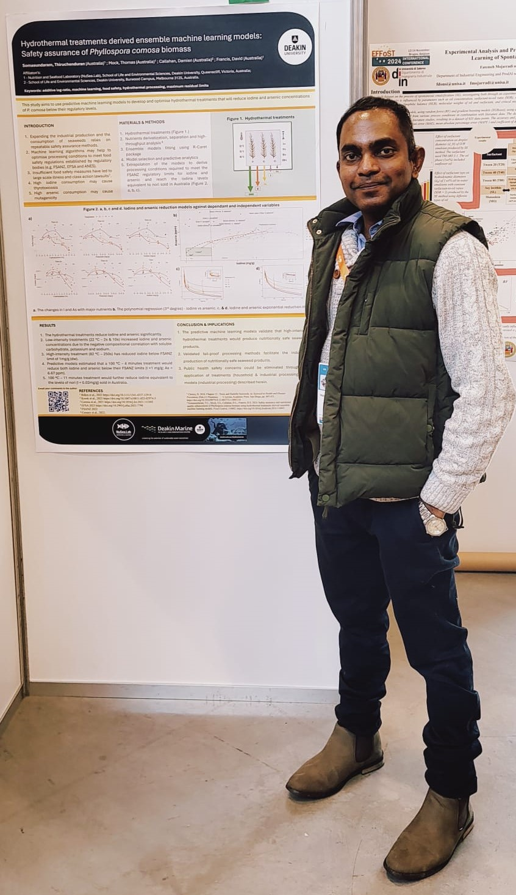

Dr Thiru C Somasundaram
Scientific Endeavours Towards Sustainable Global Nutrition and Public Health
Greetings and welcome to my scholar website, where you can get my research and scholarly updates as they happen along with additional links to connected resources.
I am Dr Thiruchenduran Somasundaram also called as Dr Thiru C Somasundaram, T Somasundaram or simply Thiru.
I am currently located at Deakin Marine Centre, Queenscliff, Victoria 3225, Australia. Please say hi to me, if you visit our amazing research facility and want to know more about my research in-person.

Academic activity updates
2025
IUNS-ICN
Abstract submitted to the International Congress of Nutrition of International Union of Nutritional Sciences, France August 2025.
Title: Expert guidelines on improving the quality of published aquatic food nutrient composition data for their inclusion in FCTs, FCDs, and evidenced based nutritional plans, policies and programmes.
Authors: Thiruchenduran Somasundaram1; Rita Hannisdal2; Siân Astley3; Hettie Schönfeldt4; Ananthan Rajendran5; Doris Rittenschober6; Fernanda Grande6; Sitilitha Masangwi7; Kendra Byrd8; Christina Hicks9; Marian Kjellevold10; International Community Of Practice On Nutrient Composition Of Aquatic Foods11
IMR: Bergen, Norway
A brainstorming collaborative activity was carried out at Institute of Marine Research, Bergen from the 20th - 24th January, 2025 for the preparation of best practice checklist and guidance for producing aquatic food nutrient composition data. The activity was carried out between Dr. T C Somasundaram, Professor M Kjellevold, and Dr R Hannisdal
ICoP: Rome, Italy
A collaborative manuscript drafting workshop with the aquatic food composition database experts from America, Australia, Belgium, France, Ghana, India, Italy, Malawi, South Africa, Spain, and United Kingdom. This writing workshop lasted for four days from the 14th - 17th January. The sessions resulted in three draft future focused manuscripts.
2024
★ Published- Food Research International (IF 7)
The third paper from my Ph.D. thesis was published in the Food Research Interantional, an Elsevier journal. The paper titled Nutrient based classification of Phyllospora comosa biomasses using machine learning algorithms: Towards sustainable valorisation was co-authroed with Tom Mock, Damien Callahan and David Francis of Deakin University
SLCARP Awards, Colombo
The NANSEN project was awarded SLCARP prestigious national award on the 16th December 2024. An excellence in research award (1st place) was given to the entire team who participated in the FAO - EAF NANSEN project, conducting the ecosystem survey in Sri Lankan waters while on-board the R/V Dr Fridtjof Nansen at the event organised by Sri Lanka Council for Agricultural Research and Policy in Colombo.
BOKU University, Vienna, Austria
An academic and a paper discussion at the BOKU University, Vienna with a Ph.D. Scholar
Bonn University, Bonn, Germany
Had a priviledge to visit the oxysterol labs at the Department of Clinical Pharmacology, Bonn University and listen to an informative lecture from Prof. Dieter Lütjohann.
Erasmus MC, Rotterdam, The Netherlands
A training on the fucosterols estimation and their functionalities was carried out at the Lipid Labs at Erasmus Medical Centre, Rotterdam for the fermentation samples from my Ph.D. work.
EFFoST - Brugges, Belgium
Presented two of my Ph.D. papers (one published and one still draft) at the European Federation for Food Science and Technology conference at Brugges, Belgium in November 2024.
★ Ph.D. Graduation at Deakin
Officially graduated at the Deakin University graduation ceremony at Deakin Waterfront on the 19th of September 2024.
Casual research fellow
Appointed as a casual research fellow at NuSea.Lan to complete a project in collaboration with AIMS - RRAP project on Novel Hetero tropic Coral Nutrition aiming to complete the project by the end of the year.
2023
Agrifutures Travel grant to attend ISS2023
Agrifutures awarded a travel grant and conference registration scholarship, helping me to attend the international seaweed symposium 2023 in Hobart, Tasmania, Australia.
2022
Rural and regional scholarship award SMP2022 AUS
The rural and regional award to meet Australian parliamentarians and discuss further advancing the STEM research around my Ph.D. topic area. I was lucky to meet Honorable MP Libby Cooker of the Corangamite Shire of Victoria using this scholarship and was able to meet the other fellows at the gala dinner at RMIT campus.
2021
Deakin Warrnambool, Melbourne, Australia
I delivered a lecture on sustainable use of seaweeds in agriculture to the visiting consular corps Melbourne at Deakin Warrnambool campus.
2020
Seaweed Solutions Workshop, Hobart, Tasmania
I was invited to present my Ph.D. project proposals and network with students at UTas, Hobart, Tasmania.
2019
DemoDAIRY Foundation scholarship
DemoDAIRY foundation scholarship was awarded to me to carryout research work on the applications of seaweeds as livestock feed.
Invited lecture, Kanpur
Delivered an invited lecture on “Marine Food and Nutritional Resources” under the CAAST-NC project organized under the title “Recent Advances in Functional and Nutraceuticals for Future Foods” at Chandra Shekhar Azad University of Agriculture and Technology, Kanpur, Uttar Pradesh, India for Master students, Ph.D. students & Faculty members on 20/07/2019,
FAO Workshop, Rome
Attended the workshop on nutrition and food safety at FAO, Rome, from 2-4 July 2019 and made a presentation on “Nutrition and Food Security - issues from an Asian perspective”. Further, engaged in the workshop in furthering the manuscripts from the EAF-NANSEN survey 2017.
2018
IMR Workshop, Bergen
Workshop on Nutrition and Food Safety, Institute of Marine Research. Bergen 13-15 November 2018 Based on EAF Nansen Ecological Survey conducted on board of research vessel Dr Fridtjof Nansen in 2017